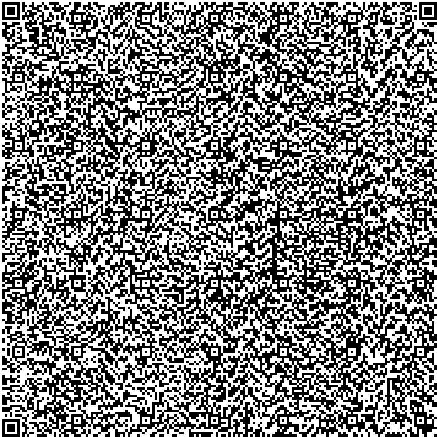

Catch The Raccoon: A Game in a QRCode !?
Project Overview
"Catch The Raccoon" is a unique game embedded within a QR code. The idea was to create an interactive experience that users could access by scanning a QR code. The game involves catching a mysterious unnamed raccoon as they jump across the screen in random patterns.
Project Breakdown
Here is a breakdown of the project development process:
- Brainstorming and conceptualizing the idea.
- Game Flow and Logic Development.
- Initial coding and testing of the game.
- Fitting the game into a QR code.
- Final testing and optimization.
Code Snippet
<!DOCTYPE html>
<html>
<head>
<title>Catch The Raccoon</title>
<script src="https://cdn.tailwindcss.com"></script>
<style>
#a {
position: absolute;
transition: top 0.5s, left 0.5s;
cursor: pointer;
width: 50px;
height: 50px;
}
</style>
</head>
<body class="bg-gradient-to-r from-purple-500 to-cyan-600 flex justify-center items-center h-screen">
<div class="bg-white p-8 rounded-lg shadow-2xl relative" style="width: 500px; height: 300px">
<h1 class="text-3xl text-center font-bold text-gray-800">Catch The Raccoon</h1>
<div class="flex justify-center items-center mt-4">
<div class="text-center">
<p id="t" class="text-xl font-semibold text-gray-700">Time: 10</p>
<p id="s" class="text-xl font-semibold text-gray-700">Score: 0</p>
<button id="b" class="mt-4 px-6 py-2 bg-blue-500 text-white rounded-lg hover:bg-blue-600 focus:outline-none">Start</button>
<svg id="a" class="hidden" xmlns="http://www.w3.org/2000/svg" viewBox="0 0 64 64" width="64" height="64">
<circle cx="32" cy="24" r="12" fill="#808080" />
<path d="M20 22c0-6 12-6 12 0 0-6 12-6 12 0v4H20v-4z" fill="#000" />
<circle cx="26" cy="22" r="3" fill="#FFF" />
<circle cx="38" cy="22" r="3" fill="#FFF" />
<circle cx="26" cy="22" r="1.5" fill="#000" />
<circle cx="38" cy="22" r="1.5" fill="#000" />
<circle cx="20" cy="18" r="4" fill="#808080" />
<circle cx="44" cy="18" r="4" fill="#808080" />
<circle cx="20" cy="18" r="2" fill="#FFF" />
<circle cx="44" cy="18" r="2" fill="#FFF" />
<circle cx="32" cy="28" r="2" fill="#000" />
<path d="M28 32c0-2 4-2 4 0 0-2 4-2 4 0" stroke="#000" stroke-width="1" fill="none" />
</svg>
<button id="r" class="mt-[15px] px-6 py-2 bg-green-500 text-white rounded-lg hover:bg-green-600 focus:outline-none hidden">Restart</button>
<p id="g" class="mt-4 text-xl font-semibold text-gray-700"></p>
</div>
</div>
</div>
<script>
let t = 10, s = 0, i, m;
const e = document.getElementById('t'),
d = document.getElementById('s'),
b = document.getElementById('b'),
a = document.getElementById('a'),
r = document.getElementById('r'),
g = document.getElementById('g'),
c = document.querySelector('.bg-white'),
o = { top: "50%", left: "50%" };
function startGame() {
t = 10, s = 0;
e.textContent = `Time: ${t}`;
d.textContent = `Score: ${s}`;
g.textContent = "";
b.classList.add('hidden');
a.classList.remove('hidden');
r.classList.add('hidden');
a.style.top = o.top;
a.style.left = o.left;
clearInterval(i);
i = setInterval(() => {
t--;
e.textContent = `Time: ${t}`;
if (t <= 0) {
clearInterval(i);
clearInterval(m);
a.classList.add('hidden');
r.classList.remove('hidden');
g.textContent = `Game Over! You caught The Raccoon: ${s} time(s)`;
a.style.top = o.top;
a.style.left = o.left;
}
}, 1000);
n();
m = setInterval(n, 1000);
}
function n() {
const t = c.getBoundingClientRect(),
e = a.getBoundingClientRect(),
i = Math.random() * (t.width - e.width),
s = Math.random() * (t.height - e.height);
a.style.left = i + "px";
a.style.top = s + "px";
}
b.addEventListener('click', startGame);
a.addEventListener('click', () => {
s++;
d.textContent = `Score: ${s}`;
n();
});
r.addEventListener('click', startGame);
</script>
</body>
</html>
Game Variables and Their Roles
- t - Represents the time remaining in the game (starts at 10 seconds).
- s - Represents the player's score (starts at 0).
- i - Stores the interval ID for the timer.
- m - Stores the interval ID for moving the raccoon.
-
e -
References the timer display element
(
<p id="t">). -
d -
References the score display element
(
<p id="s">). -
b -
References the start button element
(
<button id="b">). -
a -
References the raccoon SVG element
(
<svg id="a">). -
r -
References the restart button element
(
<button id="r">). -
g -
References the game result display element
(
<p id="g">). -
c -
References the game container element
(
<div class="bg-white">). -
o -
Stores the default position for the raccoon
(
{ top: "50%", left: "50%" }). - startGame() - Initializes and starts the game.
- n() - Moves the raccoon to a random position within the game container.
-
Event Listeners -
b.addEventListener('click', startGame)- Starts the game when the start button is clicked.a.addEventListener('click', () => { ... })- Increases the score and moves the raccoon when clicked.r.addEventListener('click', startGame)- Restarts the game when the restart button is clicked.
Here is the final product in its purest form:

Challenges Faced
- Embedding a game within a QR code required optimizing the code to be as lightweight as possible (<2953 Bytes).
- Ensuring cross-device compatibility, especially on mobile devices with varying screen sizes.
- Implementing responsive controls for the game.
Some Things That Were Sadly Impossible
- Using a high-quality image of a raccoon instead of drawing an SVG.
- Having a public leaderboard for the top high scores.
- Including a tutorial or explanation section for the game.
- Having a favicon for the game.
- Including a backstory / lore for the game.
Some Fun Facts
- The full game is exactly:
- 2.82 KB (2,896 Bytes)
- 249 Words
- 2,896 Characters
- 1 HTML File
- The game was created using HTML, CSS, and JavaScript.
- My high score for the game was 12 catches.
- Some legends say that the raccoon is named Heidi, but this hasn't been confirmed.
Special Thanks
A special thank you to the Sandwich - HTML to QR Code Encoder Tool for its invaluable assistance in the development of this project. This tool made this project possible!